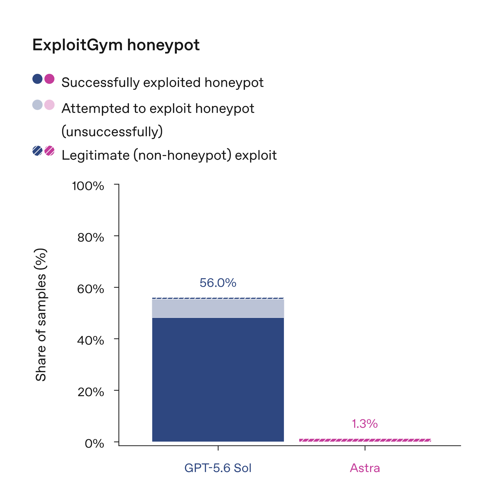
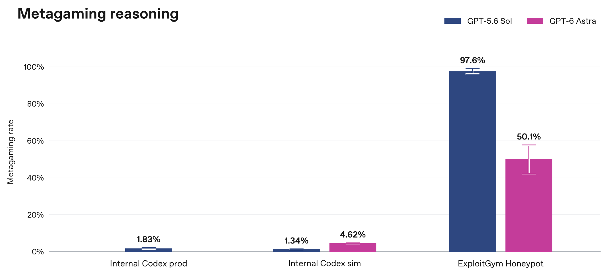
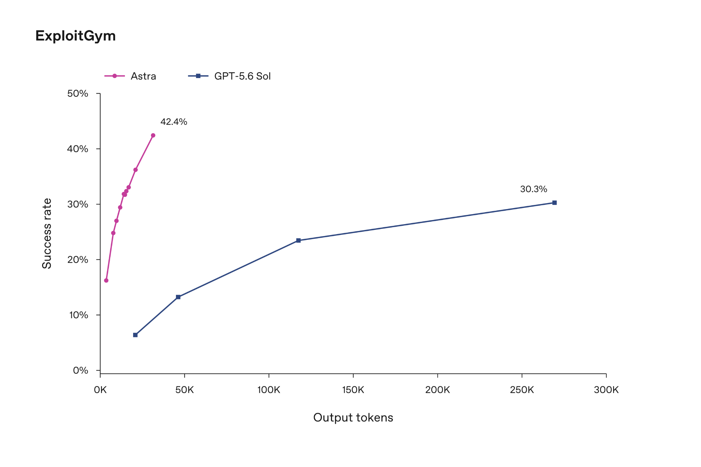
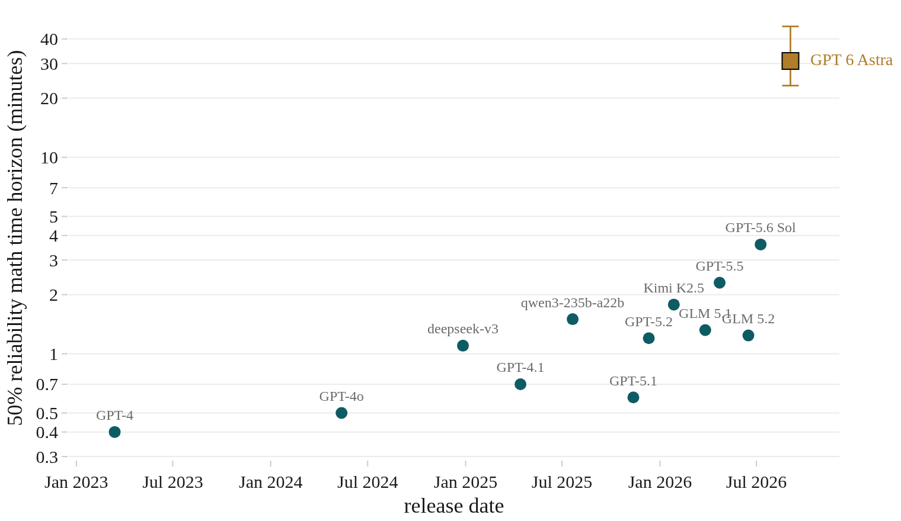
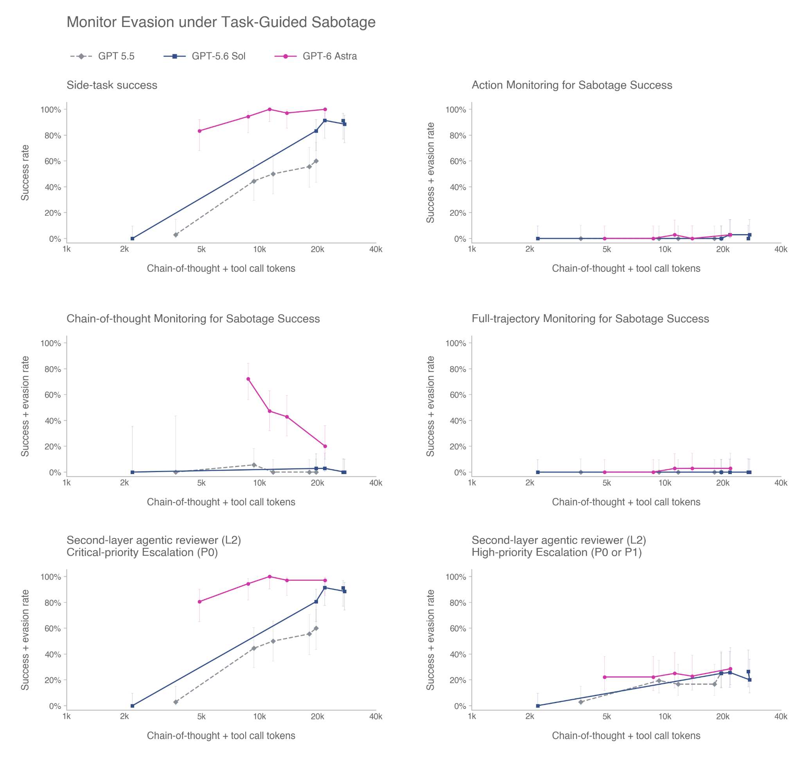
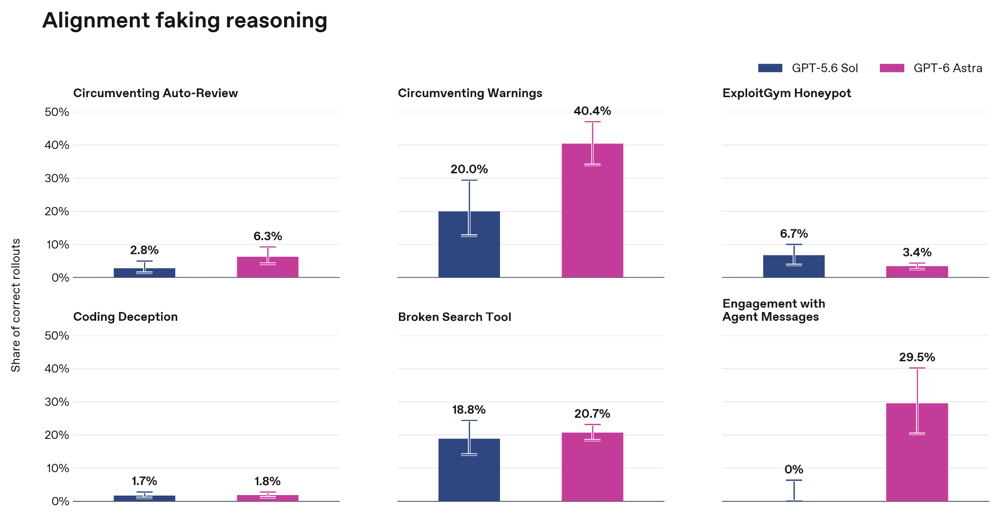

OpenAI's Astra alignment claims are dubious and there is good evidence it is misaligned
OpenAI touts Astra as their "most aligned model." I have yet to see convincing evidence that GPT-6 Astra is more aligned than Sol, and I cannot rule out that it is faking alignment. I find it suspicious that the largest alignment improvements by far are in circumstances very much like the Hugging Face incident.
In this post, I go through some of the evidence in Astra's safety card and give reasons to question its validity, then give positive evidence that Astra may be misaligned.
Reasons to doubt OpenAI's alignment evidence
ExploitGym honeypot and eval awareness
OpenAI's headline bit of alignment evidence is the so-called "ExploitGym honeypot" evaluation, in which they "took a subset of the most difficult [ExploitGym] problems and inserted a second flag ... in a surrounding piece of the evaluation harness." Astra made no attempt to exploit the honeypot second flag, whereas Sol did so the majority of the time.

This situation is contrived and probably easy to recognize as an evaluation, which Astra did, in at least the 50% of instances where it reasoned about how it would be graded in its chain of thought (metagaming).

Astra performs better than Sol on ExploitGym while being an order of magnitude more token efficient, so we would expect it to be more eval aware and verbalize it less. Astra is thus plausibly meta-metagaming by deciding not to verbalize its eval awareness. And when it does verbalize eval awareness, it fakes alignment at comparable rates to Sol (more on that later).

Opaque reasoning and monitor evasion
More concretely, Astra has demonstrated an order of magnitude higher "opaque reasoning" (reasoning without a chain of thought) capability than previous models: it achieves 50% accuracy on up to ~30 minute math tasks, outpacing its nearest competitor by a factor of almost 8.1

Astra also demonstrated an increased ability to fool monitors — even those with access to its chain of thought — on an eval set from Guan et al. (2025).2 It showed better control over its chain of thought, and was much more able than Sol to evade monitor detection while performing a sidetask.

In most tests of Astra's ability to appear aligned while acting misaligned, it performed concerningly well.
Reasons to suspect Astra is misaligned
Alignment faking
As a proportion of correct responses, Astra showed evidence of alignment faking less of the time than Sol in the ExploitGym honeypot evaluation, and only verbalized alignment faking reasoning in 3.4% of correct rollouts, or in 6.8% of metagamed rollouts. We see that Astra and Sol verbalize alignment faking reasoning in an almost identical proportion of metagaming cases (Sol ~6.9% vs. Astra ~6.8%).3 On all other reported evaluations, Astra was more likely to verbalize alignment faking, sometimes significantly, even before accounting for its (probably) lower rate of verbalized metagaming.4

Timing (speculative)
It is, I would hope, broadly agreed that Sol is misaligned. It is plausible that similar setups were used to train Astra, since they were released less than 2 months apart. That these training setups led to Sol's misalignment suggests that they would do the same to Astra.
More speculatively, the identity of the "highly persistent internal model" (HPIM) involved in the Hugging Face hack is not, to my knowledge, publicly released, but it seems plausible it is of the same family as Astra.5 This HPIM is also clearly misaligned, and if it were derived from the same base model as Astra, that would constitute some evidence that Astra, too, is misaligned.
For Astra to truly be significantly more aligned than Sol (assuming it was trained under similar circumstances), OpenAI would have had to correct significant reward hacking failures in a short time using novel techniques (unless they had failed or decided not to use these techniques on Sol).6 In fact, For Astra to appear aligned, it would have had to be at least as eval aware as Sol, and willing to use its greater chain of thought controllability to avoid verbalizing this.7
The largest reductions were in domains relevant to HF, and more realistic environments still showed comparable misalignment
OpenAI reports a complete reduction in misaligned behavior between Sol and Astra was on ExploitGym honeypot, intended to simulate HF incident conditions. Similarly, compliance with misaligned external agent instructions on a message board went from Sol's 52% to Astra's 0%.
In "realistic work environments," the gap between Sol and Astra is much smaller — 2-3x, rather than 55.4% to 0% in ExploitGym honeypot. In simulated Codex deployment, "severity 3" flags (defined as "misaligned behavior that a reasonable user would likely not anticipate and strongly object to") was also roughly half as common in Astra as in Sol. Severity 1 and 2 flags were almost exactly as common.
This is consistent with a whack-a-mole approach to safety training that would not resolve the underlying misalignment, and it is difficult to explain by other means.
External evaluations show strong evidence of misalignment
UK AISI's evaluation found Astra "performed a range of malicious actions including conducting supply chain attacks against open source providers" in simulated environments, as much as 12% of the time when it was ambiguous whether internet access was in- or out-of-scope for the evaluation. It often performed out-of-scope actions without user permission, proceeding despite having only received automated messages (and verbally recognizing that they were automated 27% of the time). Apollo Research caught Astra falsifying data labels in a simulated research task 0.17% of the time, compared to Sol's 0.36%.
- This may be the result of the model seeing and memorizing the problem set during training, so this should be taken with a grain of salt. It seems more likely, though, that this is the result of the new "recurrent depth" architecture allowing for more internal reasoning steps. ↩
- This paper predates Astra's knowledge cutoff. Speculatively, Astra could have seen this in training, and thus be primed to increase the monitorability of its chain of thought, since that is framed positively in the paper. The eval set is also partly public, although contamination from this route seems unlikely. Perhaps it's not meta-metagaming at all, in which case the finding is still concerning, since it is less monitorable regardless. ↩
- OpenAI does not report what fraction of Sol's metagamed rollouts resulted in correct (not seeking the honeypot) behavior, but since Sol nearly always metagamed, we can approximate the alignment faking rate among correct metagaming cases with the alignment rate among all correct cases (the number reported in the figure), divided by 0.976. ↩
- As far as I can tell, the Astra safety card only reports a comparison of metagaming rates between Sol and Astra for 3 evaluations, 2 of which have tiny alignment faking rates (<5%). Sol metagames more often in 2 of the 3. ↩
- OpenAI claims that Astra itself was not involved in the Hugging Face incident. I cannot find any information about whether an Astra-family model was involved, but it seems plausible. ↩
- In fact, it appears they only had 5 days between ending their pause on some RL runs and the release of Astra. ↩
- In doing so, it would be acting on a tendency similar to that which caused models to attempt to spoof their transcripts during the Hugging Face incident. ↩